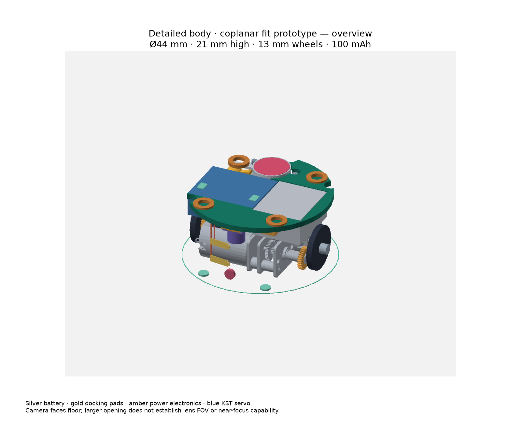

Detailed mechanical fit prototypeØ44 × 21 mm mechanical reference · 13 mm wheelsThree body parts, underside fasteners, downward camera, a 6 mm magnet lift and wall-rail charging contacts.Open mover in 3DBody STEP/STL package